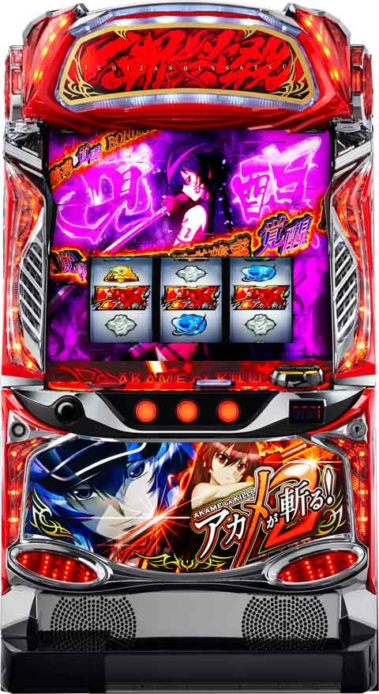

Lアカメが斬る2

 狙い目
狙い目
※ハマりゲーム数は液晶ゲーム数
【リセット狙い】
600Gから
リアルボーナス高確率あり
新台初日、ラムクリ後は熱いかも？
【AT間天井狙い】
700Gから
【CZモード狙い】
ステージが戦いの先触れなら、CZ当選まで？
【有利区間切れ狙い】
不明
やめ時
基本即やめ？
エンディング後は70Gまで
※エンディング後はエスデスモードに平均70G経由して突入
その他
内部状態・ステージ

参考元
基本情報
- メーカー: 新日テクノロジー
- 機械割: 97.6% 〜 114.9%
- 導入開始日: 2024年07月08日（月）
- ゲーム性概要: ループ性を持つリアルボーナスを搭載したAT機で、『L アカメが斬る！ 2』が登場。通常時からAT中まで、約1/730で成立する「一撃必殺目」がボーナスのカギとなっていて、成立後はボーナスの高確率状態へ突入。ボーナス高確率状態中は約1/3.8でボーナスに当選かつ、ボーナス後は再びボーナス高確率状態へ復帰する（ボーナスループ期待度は約67%）。ボーナスは当選タイミングによって恩恵が変化するため、どこでボーナスを引けるかも重要だ。


打ち方
打ち方・小役
打ち方（小役狙い）
「最初に狙う絵柄」

左リール上段付近にBARを狙う。
「チェリー停止時」
成立役…弱チェリーor強チェリー

「BAR下段停止時」
成立役…ハズレorリプレイor共通ベル（3枚）or弱チャンス目

「スイカ停止時」
成立役…スイカor強チャンス目

中リールにスイカを狙う（BAR or 青7目安）。右リールはフリー打ちでOKだ。
「レア役の停止形」

「一斬必殺目を狙え発生時」

中リールに一斬必殺目を狙って、停止すればボーナス高確率状態へ突入する。

一斬必殺目を狙えは第2停止時に発生するのがデフォルト。レア役と見せかけて狙えが発生することもある。
変則押しはNG

通常時、押し順ナビなし時は左リール第1停止での消化を推奨する。
ボーナス中の打ち方
「基本はナビ通りに消化でOK」

「リール枠白フラッシュ時」

いずれかのリールにBARを狙って消化。
［左リールBAR狙い］ボーナス高確率中の楽しい打ち方
「最初に狙う絵柄」

左リール枠内にBARを狙い、チェリーやスイカが止まった場合はボーナス濃厚（リーチ目）。当該ゲームでの転落を否定するセーフ目なども存在する。
「1確目」

「2確目」

「ボーナス or 転落 or セーフ目」

※1G前に転落していた場合など、一部の状況では法則が無効となるケースあり
［左リール7狙い］ボーナス高確率中の楽しい打ち方
「最初に狙う絵柄」

左リール枠内BAR狙い時と同様、停止形でボーナスや転落の察知ができる。赤7と青7のどちらを狙ってもOKだ。
「1確目」

「2確目」

「ボーナス確定目」

「転落の可能性がある出目」

※1G前に転落していた場合など、一部の状況では法則が無効となるケースあり
リーチ目／出目法則
ボーナス高確率中のリーチ目
「左リールBAR狙い・リーチ目」

「左リール7狙い・リーチ目」

解析情報通常時
小役関連
レア役確率
| 役 | 確率 |
|---|---|
| スイカ | 1/99.9 |
| 弱チェリー | 1/81.9 |
| 弱チャンス目 | 1/179.1 |
| 強チャンス目 | 1/327.7 |
| 強チェリー | 1/399.6 |
| レア役合算 | 1/30.0 |
CZ当選率 通常滞在時
| 役 | モードA～C | モードD （全設定共通） |
|---|---|---|
| 下記以外 | ー | ー |
| 弱チェリー | 0.4%～2.0% | 6.3% |
| 強チェリー | 25.0%～34.4% | 50.0% |
| スイカ、弱チャンス目 | 0.4%～2.0% | 50.0% |
| 強チャンス目 | 15.6%～26.6% | 87.5% |
高確滞在時
| 役 | モードA～C （全設定共通） | モードD （全設定共通） |
|---|---|---|
| 下記以外 | ー | 2.3% |
| 弱チェリー | 50.0% | 75.0% |
| 強チェリー | 87.5% | 100% |
| スイカ、弱チャンス目 | 6.3% | 75.0% |
| 強チャンス目 | 50.0% | 100% |
※通常滞在中はモードA～CのCZ当選率に設定差アリ
内部状態関連
チェリー強化状態概要
| 項目 | 内容 |
|---|---|
| 移行契機 | チェリー成立時の一部 |
| 平均滞在ゲーム数 | 25G |
| 消化中の抽選 | 弱チェリーでも約50%でCZ当選 |

チェリー強化状態中は、液晶内に赤いエフェクト＋右上に帯が出現する。
通常時・チェリー強化状態移行率
| 役 | 当選率 |
|---|---|
| 弱チェリー以外 | 0.4% |
| 弱チェリー | 39.8% |
チェリー強化状態の継続ゲーム数
| 項目 | 内容 |
|---|---|
| 継続ゲーム数 | 15Gの保証終了後、1/9.8で転落 |
| 平均継続ゲーム数 | 25G |
モード
通常モード概要
通常時はモードA〜Dでレア役成立時のCZ当選期待度が変化（昇格契機はレア役）。この4つとは別に、300G・500G・700Gの天井経由でのみ移行するモードEも存在する。モードE移行後は約1/20でAT直撃となる。
モードの特徴
| 項目 | 内容 |
|---|---|
| モードの種類 | A＜B＜C＜Dの順にCZ当選期待度がアップ |
| モードの種類 | モードEはゲーム数消化でのみ移行する 仮天井のようなモードで、約1/20でATに当選 |
| 昇格契機 | おもにスイカ、チャンス目 |
| その他 | CZやAT当選までモードの転落はナシ |
規定ゲーム数到達でのAT抽選

CZ経由とは別に、規定ゲーム数到達でもAT当選の可能性あり。リール右下にあるゲーム数カウンターの色が青や赤に変化すれば規定ゲーム数到達のチャンスとなる。 300、400、500Gはチャンスだ。
エスデスモード
おもにエンディング後に突入する特殊なモード。エスデスモード突入時は通常時を平均70G消化後、 エスデスCZ（成功すれば革命ノ刻へ、失敗してもAT確定）へ移行 する。 エスデスモード中（CZまでの約70G間）にボーナスを引ければ、斬ポイント10pt＋革命ノ刻が確定するエスデスBIG確定だ。
エスデスモード性能
| 項目 | 恩恵 |
|---|---|
| 突入契機 | ● エンディング後、AT終了後の一部 |
| 恩恵 | ● 通常時を平均70G消化後、エスデスCZへ突入 |
| 恩恵 | ● エスデスCZ成功で革命ノ刻へ、失敗時はATへ |
| 恩恵 | ● CZ突入までにボーナスを引けばエスデスBIG確定 |
| その他 | ● 一度エスデスモードに突入すれば、AT終了後もエスデスモード継続の可能性あり |
| 注意点 | 一度も一斬必殺目を引いていない場合、エンディングに到達してもエスデスモードへは突入しない |
［エスデスモード突入告知］

エスデスモード突入を判別できるのはエンディング後のみとなっていて、エンディング終了後にエスデスのカットが入ればエスデスモード確定だ。
通常時・モードアップ当選率
| 役 | 当選率 |
|---|---|
| スイカ、弱チャンス目 | 39.8% |
| 強チャンス目 | 70.3% |
※モードアップは1段階ずつ、CZやAT当選まで転落ナシ
レア役契機のモードアップ率は全設定共通だが、設定変更時やAT終了後は高設定ほど上位のモードが選ばれやすい。
裏モード性能
| 項目 | 内容 |
|---|---|
| 移行契機 | ボーナス高確率状態で ボーナスを引けずに終了した場合の一部 （覚醒高確率スルー時は必ず移行） |
| 恩恵 | CZ当選＝AT直撃に変化 |
| 恩恵 | 裏モード中にBIGを引くと AT直撃BIG（SBIG）に変化 |
| 裏モード 滞在ゲーム数 | 裏モード→平均100G ロング→平均465G |
| 転落契機 | リプレイ成立時の抽選 |
ボーナス高確率状態でボーナスを引けずに終了した場合の一部で裏モードへ移行。裏モード中はCZを引けばAT直撃に変化する。
リプレイ成立時・裏モードからの転落率
| モード | 転落率 |
|---|---|
| 裏モード | 7.0% |
| 裏モードロング | 1.6% |
エスデスポイント
エスデスポイント性能
| 項目 | 内容 |
|---|---|
| ポイント獲得契機 | ボーナス高確率状態が ボーナスを引けずに終了した場合 |
| 獲得ポイント | 1～10pt |
| 規定ポイント 到達時の恩恵 | 次回CZ当選時はCZの対戦相手がエスデスに、 BIG当選時はエスデスBIGに変化 |
| その他 | 朝イチは初期ポイントを持っている可能性あり |
| その他 | ボーナス高確率状態スルーの次ゲームで発生する ミニキャラのセリフ色にポイント示唆あり |
CZ
CZ概要

CZは前半の作戦会議ZONEと後半のバトルの2部構成。前半はリプレイとレア役で対戦相手（継続ゲーム数）の昇格を抽選していて、15G消化後の バトルで勝利できればATに突入 する。バトルは1Gあたりの勝利期待度は対戦相手共通のため、昇格＝ゲーム数が長い相手ほど勝ちやすいというわけだ。
CZ性能
| 項目 | 内容 |
|---|---|
| 当選契機 | レア役成立時の抽選 |
| 継続ゲーム数 | 15G＋α （バトルの対戦相手で継続ゲーム数が変化） |
| 消化中の抽選 | 前半→リプレイ・レア役で対戦相手の昇格抽選 |
| 消化中の抽選 | 後半→全役でバトル勝利を抽選（約1/8） |
| 平均AT期待度 | 約50% |
「対戦相手の昇格」

「バトル」

液晶下部に表示された斬のアイコンが継続ゲーム数。
対戦相手の序列
| 対戦相手 | 序列 | ゲーム数 |
|---|---|---|
| オーグ | 低 | 3Gor4G |
| セリュー | ↓ | 5Gor6G |
| リヴァ | ↓ | 7Gor8G |
| ザンク | 高 | 9Gor10G |
| エスデス | AT濃厚、勝利で特化ゾーン濃厚 | 10G |
CZ勝利期待度
| 項目 | 期待度 |
|---|---|
| 下記以外 | 抽選あり |
| リプレイ | 約33% |
| 弱レア役 | 約70% |
| 強レア役・一斬必殺目 | 100% |
| 1Gあたりの勝利確率 | 約1/8 |
対戦相手（継続ゲーム数）昇格率
| 昇格 | リプレイ | 弱レア役 | 強レア役 |
|---|---|---|---|
| ナシ | 79.7% | ー | ー |
| 1段階 | 20.3% | 75.0% | ー |
| 2段階 | ー | 21.1% | 50.0% |
| 3段階 | ー | 3.1% | 37.5% |
| 4段階 | ー | 0.8% | 12.5% |
バトル勝利当選率
| 役 | 当選率 |
|---|---|
| 下記以外 | 6.3% |
| リプレイ | 33.6% |
| 弱レア役 | 70.3% |
| 強レア役 | 100% |
| 一斬必殺目 | 100% |
対戦相手ごとの平均勝利期待度
| 対戦相手 | 継続ゲーム数 | 期待度 |
|---|---|---|
| オーガ | 3G | 33.9% |
| オーガ | 4G | 42.3% |
| セリュー | 5G | 49.3% |
| セリュー | 6G | 56.0% |
| リヴァ | 7G | 61.4% |
| リヴァ | 8G | 66.2% |
| ザンク | 9G | 70.3% |
| ザンク | 10G | 74.1% |
| エスデス | 10G | 79.8% |
※エスデスは革命ノ刻期待度（失敗してもAT確定）
抽選値に対戦相手ごとの差はないので、ゲーム数が長い相手ほど勝利期待度が高い。 ザンクの10Gとエスデスの期待度が異なるのは、ザンクは前半パート中の役による昇格で10Gになるのに対し、エスデスは前兆中や前半パートから勝利抽選がおこなわれるケースがあるため。
一斬必殺目＆ボーナス高確率状態
一斬必殺目概要

全状態共通で、一斬必殺目が停止すればボーナス高確率状態へ突入する。

一斬必殺目を狙えは第1停止後に発生するパターンが基本で、左リール下段にBARが非停止時の狙え発生は、一斬必殺目停止濃厚だ（左リールにBARを狙っていた場合のみ）。
一斬必殺目を狙え確率＆揃い期待度
| 項目 | 抽選値 |
|---|---|
| 発生確率 | 約1/243 |
| 揃い期待度 | 33.3% |
ボーナス高確率状態概要

一斬必殺目停止後に移行する状態で、 約1/3.8 でボーナスに当選。ボーナス中は成立時の状況（通常時、AT中など）に応じてさまざまな抽選がおこなわれる。 ボーナス高確率状態中のボーナス当選期待度は 約67% となっていて、ボーナス終了後は再びボーナス高確率状態へ復帰。保証等はないのでボーナスを引けないケースもあるが、うまくボーナスを連チャンさせられれば、大量出玉獲得のトリガーとなりえる。
ボーナス高確率状態性能
| 項目 | 内容 |
|---|---|
| 突入契機 | 一斬必殺目停止後 |
| ボーナス確率 | 約1/3.8 |
| ボーナス当選期待度 | 約67% |
| 転落後 | 元の状態へ復帰 |
「覚醒高確率」


必殺停止確率
| 設定 | 確率 |
|---|---|
| 全設定共通 | 1/7.3 |
一斬必殺目停止の次ゲームでは、中リールに必殺を狙えが発生。中リール中段に必殺が止まると覚醒高確率へ突入する。止まらなかった場合は通常のボーナス高確率へ。
覚醒高確率の恩恵
| 当選タイミング | 恩恵 |
|---|---|
| 通常時 | ボーナス当選時はスーパーBIG確定（AT確定） |
| AT中 | 初回ボーナスの斬ポイント獲得率アップ （1回目のボーナスのみ優遇） |
※AT中には特化ゾーン中も含む
直撃抽選
モードE滞在中・AT直撃当選率
※トータルAT直撃確率は約1/20
モードE移行後（300G・500G・700Gの天井到達後）は、高確率でAT抽選がおこなわれる（モードA〜Dはレア役で移行抽選）。
演出動画
ロングフリーズ
通常時のボーナス高確率状態開始時にのみ、発生する可能性あり。斬ポイント10pt＋赤7BIG＋80%以上の革命ノ刻＋エスデスモード移行抽選と、発生時の恩恵は超強力だ。
フリーズ
ロングフリーズ


ロングフリーズの恩恵
| 項目 | 内容 |
|---|---|
| 発生率 | 通常時のボーナス高確率状態開始時の0.34% |
| 恩恵 | 斬ポイント10pt＋赤7BIG＋ 80%以上の革命ノ刻＋エスデスモード移行抽選 |
※ロングフリーズ契機の赤7BIGは斬ポイントの期待値15個
解析情報ボーナス時
BIGボーナス
BIGボーナス概要

約100枚 or 約60枚獲得で終了。消化中は成立時の状況に応じて、さまざまな抽選がおこなわれる。
BIGボーナス性能
| 項目 | 内容 |
|---|---|
| 当選契機 | ボーナス高確率状態中の抽選 |
| 獲得枚数 | 赤7揃い→約100枚、青7揃い→約60枚 |
| 消化中の抽選 | 通常時→AT抽選 |
| 消化中の抽選 | AT中→斬ポイント抽選 |
| 消化中の抽選 | 特化ゾーン中→上位特化ゾーンへ昇格 |
「告知タイプ選択」

ボーナス開始時に告知タイプの選択が可能。ボーナス中は成立役に応じて斬ポイントを抽選していて、獲得した斬ポイントを使ってボーナス終了時にATを抽選（通常時に当選した場合）。AT中は獲得した斬ポイントがそのまま、継続バトルで使うゲーム数になる。
［いわかん告知］

［エピソード告知］

［変身告知］

告知タイプによって、おもにボーナス終了後のATジャッジ演出が変化する。
BB高確率の恩恵一覧
| 当選タイミング | 恩恵 |
|---|---|
| 通常時 | ● AT当選期待度約50% |
| CZ中 | ● AT濃厚 |
| AT中 | ● 斬ポイント大量獲得のチャンス |
| バカンス作戦中 | ● 斬ポイント大量獲得のチャンス |
| 革命ノ刻中 | ● 革命ノ刻極濃厚 |
| エスデスモード中 | ● エスデスBIG（斬ポイント10pt＋革命ノ刻）突入 |
エスデスBIG

エスデスモード中（CZ開始までの約70G間）のボーナス当選で突入する、斬ポイント10pt＋革命ノ刻確定のスペシャルボーナス。
エスデスBIG性能
| 項目 | 内容 |
|---|---|
| 当選契機 | エスデスモード中 （CZ突入まで） のボーナス当選 |
| 恩恵 | 斬ポイント10pt＋革命ノ刻 |
獲得枚数＆比率
| 項目 | 赤7揃い | 青7揃い |
|---|---|---|
| 獲得枚数 | 102.0枚 | 60.0枚 |
| 比率 | 31.3% | 68.7% |
平均獲得斬ポイント数
| 当選した状態 | 赤7揃い | 青7揃い |
|---|---|---|
| 通常時 | 2.1pt | 0.8pt |
| AT中 | 4.0pt | 2.0pt |
| バカンス作戦中 | 8.1pt | 4.0pt |
| 革命ノ刻中 | 10.0pt | 4.7pt |
| エスデスBIG | 10.0pt | 4.7pt |
| ロングフリーズ契機 | 15.2pt | 7.3pt |
| 革命ノ刻中の覚醒BIG | 15.2pt | 7.3pt |
※覚醒BIG…覚醒高確率中の1回目のBIG
BIG1回あたりのAT当選期待度（通常時のBIG）
| BIG | 期待度 |
|---|---|
| 赤7揃い | 約50% |
| 青7揃い | 約38% |
| トータル期待度 | 41.8% |
［AT中のBIG］斬ポイント当選率 青7揃い
| ポイント | その他 | リプレイ | 弱レア役 | 強レア役 |
|---|---|---|---|---|
| 1pt | ー | 6.3% | 32.0% | ー |
| 2pt | ー | ー | 0.8% | 95.3% |
| 3pt | ー | ー | 0.4% | 3.1% |
| 5pt | ー | ー | 0.4% | 1.2% |
| 10pt | ー | ー | ー | 0.4% |
| トータル | ー | 6.3% | 33.6% | 100% |
赤7揃い
| ポイント | その他 | リプレイ | 弱レア役 | 強レア役 |
|---|---|---|---|---|
| 1pt | ー | 9.2% | 44.5% | ー |
| 2pt | ー | ー | 0.8% | 95.3% |
| 3pt | ー | ー | 0.4% | 3.1% |
| 5pt | ー | ー | 0.4% | 1.2% |
| 10pt | ー | ー | ー | 0.4% |
| トータル | ー | 9.2% | 46.0% | 100% |
［バカンス作戦中のBIG・AT中の覚醒BIG］ 斬ポイント当選率 青7揃い
| ポイント | その他 | リプレイ | 弱レア役 | 強レア役 |
|---|---|---|---|---|
| 1pt | 0.8% | 25.0% | 97.7% | ー |
| 2pt | ー | ー | 1.6% | 95.3% |
| 3pt | ー | ー | 0.4% | 3.1% |
| 5pt | ー | ー | 0.4% | 1.2% |
| 10pt | ー | ー | ー | 0.4% |
| トータル | 0.8% | 25.0% | 100% | 100% |
赤7揃い
| ポイント | その他 | リプレイ | 弱レア役 | 強レア役 |
|---|---|---|---|---|
| 1pt | 2.3% | 40.2% | 97.7% | ー |
| 2pt | ー | ー | 1.6% | 95.3% |
| 3pt | ー | ー | 0.4% | 3.1% |
| 5pt | ー | ー | 0.4% | 1.2% |
| 10pt | ー | ー | ー | 0.4% |
| トータル | 2.3% | 40.2% | 100% | 100% |
※覚醒BIG…覚醒高確率中の1回目のBIG
［革命ノ刻中のBIG・バカンスタイム中の覚醒BIG］ 斬ポイント当選率 青7揃い
| ポイント | その他 | リプレイ | 弱レア役 | 強レア役 |
|---|---|---|---|---|
| 1pt | 1.6% | 50.0% | 97.7% | ー |
| 2pt | ー | ー | 1.6% | 95.3% |
| 3pt | ー | ー | 0.4% | 3.1% |
| 5pt | ー | ー | 0.4% | 1.2% |
| 10pt | ー | ー | ー | 0.4% |
| トータル | 1.6% | 50.0% | 100% | 100% |
赤7揃い
| ポイント | その他 | リプレイ | 弱レア役 | 強レア役 |
|---|---|---|---|---|
| 1pt | 5.4% | 62.5% | 97.7% | ー |
| 2pt | ー | ー | 1.6% | 95.3% |
| 3pt | ー | ー | 0.4% | 3.1% |
| 5pt | ー | ー | 0.4% | 1.2% |
| 10pt | ー | ー | ー | 0.4% |
| トータル | 5.4% | 62.5% | 100% | 100% |
※覚醒BIG…覚醒高確率中の1回目のBIG
［ロングフリーズ経由のBIG・革命ノ刻中の覚醒BIG］ 斬ポイント当選率 青7揃い
| ポイント | その他 | リプレイ | 弱レア役 | 強レア役 |
|---|---|---|---|---|
| 1pt | 12.5% | 75.0% | 97.7% | ー |
| 2pt | ー | ー | 1.6% | 95.3% |
| 3pt | ー | ー | 0.4% | 3.1% |
| 5pt | ー | ー | 0.4% | 1.2% |
| 10pt | ー | ー | ー | 0.4% |
| トータル | 12.5% | 75.0% | 100% | 100% |
赤7揃い
| ポイント | その他 | リプレイ | 弱レア役 | 強レア役 |
|---|---|---|---|---|
| 1pt | 19.3% | 87.5% | 97.7% | ー |
| 2pt | ー | ー | 1.6% | 95.3% |
| 3pt | ー | ー | 0.4% | 3.1% |
| 5pt | ー | ー | 0.4% | 1.2% |
| 10pt | ー | ー | ー | 0.4% |
| トータル | 19.3% | 87.5% | 100% | 100% |
※覚醒BIG…覚醒高確率中の1回目のBIG
アカメチャンス（AT）
アカメチャンス概要

1セット20G or 100G継続のAT。消化中はリプレイやレア役で斬ポイントを抽選していて、ゲーム数消化後は斬ポイントを使った帝国バトルに移行。帝国バトルでは 斬ポイントが1pt＝1Gに換算され、ポイントを使い切る前に勝利できれば報酬を獲得して次のセットへ突入 する。 10pt以上獲得した場合は継続濃厚のイェーガーズバトルへ突入。自力で勝利した場合は必ず特化ゾーンへ突入する。
アカメチャンス性能
| 項目 | 内容 |
|---|---|
| 継続ゲーム数 | 20G or100G |
| 1Gあたりの純増 | 約2.6枚 |
| 消化中の抽選 | リプレイ・レア役で斬ポイントを抽選 |
| 消化中の抽選 | 斬ポイント1ptが継続バトル1Gに変換され、 バトル勝利で次セットへ継続 |
| その他 | 3つの内部状態で斬ポイント獲得期待度が変化 |
| その他 | 10pt獲得時は帝国バトルではなく 継続濃厚のイェーガーズバトルへ |
「斬ポイントの獲得」

メインの獲得契機はリプレイとレア役。上位の内部状態に滞在しているほど、獲得率や獲得ポイントが優遇される。
［Re乗せ］

斬ポイントを獲得した次のゲームで、リプレイかレア役を引けば必ずポイントを獲得できる。
「エピソードタイム」

レア役成立時の一部で突入。エピソードをコンプリートできれば斬ポイントを10pt獲得する。
内部状態振り分け
初当り時は高確以上濃厚。2セット目以降は持っている斬ポイントが9pt以下の場合、高確以上となる。
ATの内部状態振り分け
| 内部状態 | 初回セット | 2セット目以降（斬ポイントで変化） | |
|---|---|---|---|
| 内部状態 | 初回セット | 9pt以下 | 10pt以上 |
| 通常 | ー | ー | 75.0% |
| 高確 | 68.8% | 68.8% | 12.5% |
| 超高確 | 29.7% | 29.7% | 11.7% |
| エクストラ | 1.6% | 1.6% | 0.8% |
斬ポイント当選率 通常滞在時
| ポイント | その他 | リプレイ | 弱レア役 | 強レア役 |
|---|---|---|---|---|
| 1pt | ー | 0.8% | 29.7% | ー |
| 2pt | ー | ー | ー | 100% |
| 3pt | ー | ー | ー | ー |
| 5pt | ー | ー | ー | ー |
| 10pt | ー | ー | ー | ー |
高確滞在時
| ポイント | その他 | リプレイ | 弱レア役 | 強レア役 |
|---|---|---|---|---|
| 1pt | ー | 12.5% | 60.2% | ー |
| 2pt | ー | ー | 4.7% | 93.8% |
| 3pt | ー | ー | 1.2% | 4.7% |
| 5pt | ー | ー | 0.4% | 1.2% |
| 10pt | ー | ー | ー | 0.4% |
超高確滞在時
| ポイント | その他 | リプレイ | 弱レア役 | 強レア役 |
|---|---|---|---|---|
| 1pt | ー | 40.6% | 73.8% | ー |
| 2pt | ー | ー | 4.7% | 93.8% |
| 3pt | ー | ー | 1.2% | 4.7% |
| 5pt | ー | ー | 0.4% | 1.2% |
| 10pt | ー | ー | ー | 0.4% |
エクストラ滞在時
| ポイント | その他 | リプレイ | 弱レア役 | 強レア役 |
|---|---|---|---|---|
| 1pt | 7.8% | 70.3% | ー | ー |
| 2pt | ー | ー | 93.8% | ー |
| 3pt | ー | ー | 4.7% | 87.5% |
| 5pt | ー | ー | 1.2% | 9.4% |
| 10pt | ー | ー | 0.4% | 3.1% |
エピソードタイム抽選
AT中のレア役でエピソードタイムを抽選。消化中は全役で成功抽選がおこなわれる。
エピソードタイム当選率
| 役 | 当選率 |
|---|---|
| 弱レア役 | 1.0% |
| 強レア役 | 25.0% |
| トータル当選確率 | 1/592.5 |
エピソードタイム成功率
| 役 | 成功率 |
|---|---|
| 下記以外 | 0.8% |
| リプレイ | 12.5% |
| 弱レア役 | 50.0% |
| 強レア役 | 100% |
| 一斬必殺目 | 100% |
| トータル成功率 | 約34% |
AT終了後は100G間のCZ成功期待度アップ状態へ

AT終了後100G間は、CZ当選時の対戦相手がリヴァ以上となるため狙い目（リヴァでも勝利期待度は61%以上）。対戦相手昇格抽選などを加味したトータルのCZ当選時AT期待度は約66%以上となる。
復活チャンス

帝国バトル敗北後の終了画面でレア役を引けば復活のチャンス（強レア役は復活濃厚）。 レア役を引けなかった場合の1.6% で移行する復活チャンスでは、毎ゲームの成立役に応じて終了・継続・復活が抽選されていて、復活に当選すればもちろん復活。継続を引き続けて 復活チャンスを3G継続 させた場合も復活となる。
終了画面のレア役による復活時・復活チャンス経由による復活時ともに、斬ポイントを10pt持った状態で復活するため、次セット終了時は必ずイェーガーズバトルへ移行する。
終了画面でのレア役・復活当選率
| 役 | 当選率 |
|---|---|
| 弱レア役 | 12.5% |
| 強レア役 | 100% |
復活チャンス当選率
| 契機 | 当選率 |
|---|---|
| 帝国バトル敗北時 | 1.6% |
復活チャンス中の抽選値
| 役 | 終了 | 継続 | 復活 |
|---|---|---|---|
| 下記以外 | 25.0% | 71.9% | 3.1% |
| リプレイ | ー | 87.5% | 12.5% |
| 弱レア役 | ー | 25.0% | 75.0% |
| 強レア役・一斬必殺目 | ー | ー | 100% |
※復活チャンスが3G継続した場合も復活
継続バトル
帝国バトル概要

ATゲーム数消化後に移行する継続バトルで、AT中に獲得した斬ポイント×1G継続。 バトル中は全役で勝利抽選がおこなわれていて、リプレイやレア役を引けば勝利のチャンスだ。勝利後は報酬を獲得して次のセットが始まる。
帝国バトル性能
| 項目 | 内容 |
|---|---|
| 移行契機 | ATゲーム数消化後 |
| 継続ゲーム数 | 獲得した斬ポイント×1G（最大9G） |
| 消化中の抽選 | 全役で勝利抽選 |
| 1Gあたりの勝利確率 | 約1/8 |
「報酬獲得パート」

報酬一覧
| No. | 内容 |
|---|---|
| 1 | 斬ポイント獲得 |
| 2 | 上位ステージ移行 |
| 3 | バカンス作戦突入 |
| 4 | 革命ノ刻突入 |
バトル勝利後は報酬を獲得。基本は斬ポイント獲得だが、特化ゾーンを獲得する可能性もある。
イェーガーズバトル概要

斬ポイントを10pt以上獲得時に突入する継続濃厚バトルで、 自力で勝利できれば必ず特化ゾーンへ突入 。 特化ゾーンでは斬ポイントを獲得できるため、10pt以上を維持し続けることがロング継続への最短ルートと言える。
イェーガーズバトル性能
| 項目 | 内容 |
|---|---|
| 移行契機 | 斬ポイント10pt以上獲得時のATゲーム数消化後 |
| 継続ゲーム数 | 最大10G |
| 消化中の抽選 | 全役で勝利抽選 |
| 備考 | 突入した時点でセット継続は濃厚 |
| 備考 | バトル勝利で特化ゾーン確定 （＋勝利時は次回のバトルキャラが昇格） |
| バトル勝利期待度 | 約74% |
対戦カード別・勝利時の革命ノ刻期待度序列
| 対戦カード | 序列 |
|---|---|
| タツミVSウェイブ | 低 |
| レオーネVSラン | ↓ |
| マインVSセリュー | ↓ |
| アカメVSボルス | 高 |
| アカメVSクロメ | 濃厚 |
対戦カードによって、バトル勝利時の革命ノ刻期待度が変化する。
継続バトル勝利期待度
| 項目 | 期待度 |
|---|---|
| 下記以外 | 6.3% |
| リプレイ | 33.6% |
| 弱レア役 | 70.3% |
| 強レア役 | 100% |
| 一斬必殺目 | 100% |
継続バトル勝利時の報酬振り分け
帝国バトル勝利時は報酬の種類を抽選。イェーガーズバトル勝利時は対戦相手に応じて特化ゾーンの振り分けが異なる。どちらのバトルでも、最終ゲームで勝利した場合は次セットのATゲーム数が100Gになるチャンスだ。
斬ポイント獲得選択時・獲得ポイント振り分け
| ポイント | 振り分け |
|---|---|
| 1pt | 93.8% |
| 2pt | 3.9% |
| 3pt | 1.6% |
| 5pt | 0.4% |
| 10pt | 0.4% |
イェーガーズバトル勝利時・特化ゾーン振り分け
| 対戦相手 | バカンス作戦 | 革命ノ刻 |
|---|---|---|
| ウェイブ | 96.9% | 3.1% |
| ラン | 93.8% | 6.3% |
| セリュー | 87.5% | 12.5% |
| ボルス | 75.0% | 25.0% |
| クロメ | ー | 100% |
バトル最終ゲームで勝利時・AT100G当選率
| 項目 | 当選率 |
|---|---|
| AT100G | 22.7% |
※帝国バトル、イェーガーズバトルのどちらも抽選は有効
バカンス作戦
バカンス作戦概要

1セット7G継続の斬ポイント獲得特化ゾーン。最大で5セットまで継続する可能性がある、消化中は全役で斬ポイントの獲得を抽選していて、リプレイで約50%、レア役なら獲得濃厚だ。
バカンス作戦性能
| 項目 | 内容 |
|---|---|
| 移行契機 | 継続バトル勝利時の一部 |
| 継続ゲーム数 | 7G/セット（最大5セット継続） |
| 消化中の抽選 | 全役で斬ポイント獲得抽選 |
| 消化中の抽選 | リプレイで約50%、レア役は獲得濃厚 |
| 消化中の抽選 | 1ptも獲得できなかった場合は次セット継続濃厚 |
「熱狂！バカンス作戦」

バカンス作戦中にボーナスを引くと、熱狂！バカンス作戦へ昇格。斬ポイントの獲得性能が大幅にアップする。
バカンス作戦の継続セット数振り分け
| セット数 | 振り分け |
|---|---|
| 1セット | 96.9% |
| 2セット | 1.6% |
| 3セット | 0.8% |
| 4セット | 0.4% |
| 5セット | 0.4% |
バカンス作戦中・斬ポイント当選率
| ポイント | その他 | リプレイ | 弱レア役 | 強レア役 |
|---|---|---|---|---|
| 1pt | 15.6% | 50.0% | 50.0% | ー |
| 2pt | ー | ー | 42.2% | 50.0% |
| 3pt | ー | ー | 6.3% | 37.5% |
| 5pt | ー | ー | 1.2% | 9.4% |
| 10pt | ー | ー | 0.4% | 3.1% |
| トータル | 15.6% | 50.0% | 100% | 100% |
革命ノ刻
革命ノ刻概要


本機最強の特化ゾーン。上乗せパート（7G）と継続ジャッジ（4G）の計11Gで構成されていて、継続ジャッジでアカメが負けない限りセットが継続。ループ率は70%・80%・90%の3種類が存在する。
革命ノ刻性能
| 項目 | 内容 |
|---|---|
| 移行契機 | 継続バトル勝利時の一部、エスデスCZ成功時、 エスデスモード中のボーナス、ロングフリーズ |
| 継続ゲーム数 | 上乗せパート（7G）＋継続ジャッジ（4G） |
| ループ率 | 70%・80%・90% |
| 消化中の抽選 | 毎ゲーム、斬ポイント獲得を抽選 |
| 消化中の抽選 | 継続ジャッジでアカメが倒れなければ次セット継続 |
開始時は必ずストックを1個持った状態からスタートするので、革命ノ刻の単発終了はない。
「革命ノ刻 極」

革命ノ刻中にボーナスを引けば、上乗せ性能が大幅にアップした革命ノ刻 極へ突入！
革命ノ刻のループ率振り分け
| ループ率 | 振り分け |
|---|---|
| 70.3%（平均4.4連） | 75.0% |
| 80.1%（平均6.0連） | 18.8% |
| 90.2%（平均11.2連） | 6.3% |
※平均継続数には保証1セットを含む
革命ノ刻前半中・斬ポイント当選率
| ポイント | その他 | リプレイ | 弱レア役 | 強レア役 |
|---|---|---|---|---|
| 1pt | 1.6% | 50.0% | 78.9% | ー |
| 2pt | ー | ー | 12.5% | 78.1% |
| 3pt | ー | ー | 6.3% | 12.5% |
| 5pt | ー | ー | 1.6% | 6.3% |
| 10pt | ー | ー | 0.8% | 3.1% |
| トータル | 1.6% | 50.0% | 100% | 100% |
ツラヌキ・有利区間
ツラヌキ条件と恩恵
| 項目 | 内容 |
|---|---|
| 条件 | エンディング到達時 |
| 恩恵 | エスデスモード突入 （一度も一斬必殺目を引いていない場合は突入しない） エスデスモードの詳細はコチラ |
小役関連
BIG中・レア役確率
| 役 | 確率 |
|---|---|
| スイカ | 1/35.3 |
| 弱チェリー | 1/32.8 |
| 弱チャンス目 | 1/32.9 |
| 強チャンス目 | 1/120.2 |
| 強チェリー | 1/141.2 |
| レア役合算 | 1/9.6 |
BIG中は、通常時に比べてレア役確率が大幅にアップしている。
演出情報
通常時
ステージ解説
| ステージ | 示唆 |
|---|---|
| 仲間の墓ステージ | 基本ステージ |
| ナイトレイドの日常ステージ | モードA示唆 |
| 帝国に潜む影ステージ | モードB示唆 |
| 束の間の安らぎステージ | モードC示唆 |
| 戦いの先触れステージ | モードD示唆 |
［仲間の墓ステージ］

［ナイトレイドの日常ステージ］

［帝国に潜む影ステージ］

［束の間の安らぎステージ］

［戦いの先触れステージ］

ボーナス高確率スルー後のミニキャラセリフ
ボーナス高確率をスルーした直後にPUSHボタンを押すと発生するミニキャラのセリフ（色）で、裏モード滞在やエスデスポイントの蓄積量を示唆する。
ボーナス高確率スルー後のミニキャラのセリフ色 示唆内容
| 色 | 裏モード滞在示唆 | エスデスポイント示唆 |
|---|---|---|
| 白 | デフォルト | 示唆ナシ |
| 青 | 裏モード期待度少しアップ | ポイント蓄積を示唆 |
| 緑 | 期待度は青とほぼ同じ | 5pt以上濃厚、 10pt以上期待度80%以上 |
| 黒A | 裏モード期待度70%以上 | ポイントMAX到達を示唆 |
| 黒B | 裏モード期待度90%以上、 ロングにも期待できる | ポイントMAX到達を示唆 |
※セリフの種類はキャラごとに5種類存在する
黒Aと黒Bの見分け方
| 項目 | 見分け方 | |
|---|---|---|
| アカメ以外 | 黒A | セリフ内に「裏」の言葉が入っている |
| アカメ以外 | 黒B | セリフ内に「裏」の言葉が入っていない |
| アカメ | 黒A | 「何かが隠れている」 |
| アカメ | 黒B | 「クロメ…お前なのか」 |
黒Aと黒Bはアカメ以外は、セリフに「裏」というワードが入っているかで判別可能だ。
裏モード滞在時・セリフ色振り分け
| 色 | 振り分け |
|---|---|
| 白 | 71.4% |
| 青 | 13.0% |
| 緑 | 4.6% |
| 黒A | 8.9% |
| 黒B | 2.1% |
セリフ色ごとのモード割合
| 色 | 通常 | 裏モード | 裏モードロング |
|---|---|---|---|
| 白 | 81.1% | 17.8% | 1.1% |
| 青 | 73.0% | 25.2% | 1.8% |
| 緑 | 72.7% | 25.4% | 1.9% |
| 黒A | 26.8% | 69.6% | 3.6% |
| 黒B | 6.0% | 78.1% | 15.9% |
［ミニキャラセリフ］

※画像は通常時に出現したセリフ
前兆
アジト帰還モード

CZの前兆ステージ。
アカメチャンス（AT）
ステージ解説
「通常 or 高確示唆ステージ」

「超高確示唆ステージ」

「エクストラステージ」

特化ゾーン
特殊ラウンド開始画面・示唆内容
| 画面 | 示唆 |
|---|---|
| 特殊アカメ | ループ率80%以上示唆 |
| 特殊エスデス | ループ率90%示唆 |
| ナイトレイド | ループ率80%以上濃厚 |
| アカメ＆エスデス | ループ率90%濃厚 |
※上記画面はセット継続も濃厚
特殊ラウンド画面出現時のループ率期待度
| 画面 | 70% | 80% | 90% |
|---|---|---|---|
| 特殊アカメ | 22.8% | 59.1% | 18.1% |
| 特殊エスデス | 27.4% | 35.9% | 36.7% |
| ナイトレイド | ー | 73.0% | 27.0% |
| アカメ＆エスデス | ー | ー | 100% |
特殊ラウンド開始画面は5の倍数セットで発生しやすい。
セリフ演出・示唆内容
| キャラ | 色 | 示唆 |
|---|---|---|
| アカメ | 青 | 継続期待度80%以上かつ、 ループ率80%以上示唆 |
| アカメ | 赤 | 継続濃厚 |
| アカメ | 3回以上発生 | 継続濃厚 |
| エスデス | 青 | 継続期待度80%以上かつ、 ループ率90%示唆 |
| エスデス | 赤 | 継続濃厚 |
※革命ノ刻 極中を除く
セリフ演出のループ率期待度
| セリフ | 70% | 80% | 90% |
|---|---|---|---|
| アカメ青 | 38.9% | 46.6% | 14.5% |
| アカメ赤 | 35.2% | 48.9% | 15.9% |
| エスデス青 | 42.0% | 41.4% | 16.5% |
| エスデス赤 | 38.2% | 41.7% | 20.1% |
攻防パターンのループ率期待度
| パターン | 70% | 80% | 90% |
|---|---|---|---|
| エスデス強攻撃 →アカメ回避 | 38.9% | 46.6% | 14.5% |
エスデスの強攻撃は終了のピンチだが、アカメが回避すればループ率80%以上のチャンス。初回セットは継続確定なので、エスデス強攻撃が発生したらアカメの回避を祈ろう。
［ラウンド開始画面：ナイトレイド］

［ラウンド開始画面：アカメ＆エスデス］

村雨の能力を使い、左頬に赤い模様がついたアカメが特殊アカメ。目が赤く発光し、上から見下ろすような画角のエスデスが特殊エスデス。
［青セリフ］

［赤セリフ］

その他
演出カスタム（先ブルカスタム）

メニュー画面から、先ブル（筐体振動）の発生頻度や期待度をカスタム可能。タイプはA〜Eの5種類あり、おもにレア役成立期待度や一斬必殺目を狙えの期待度が変化する。
タイプごとの先ブル発生時の特徴
| タイプ | 特徴 |
|---|---|
| タイプA | 非レア役の可能性もあり |
| タイプB | レア役or一斬必殺目狙え（フェイクあり）濃厚 |
| タイプC | 一斬必殺目狙え（フェイクあり）濃厚 |
| タイプD | レア役or一斬必殺目濃厚 |
| タイプE | 一斬必殺目濃厚 |
デフォルトはタイプAになっているが、タイプAはレア役・一斬必殺目以外でも先ブルが発生するため、ハズレが連続してガッカリしてしまうことも…。凝縮した熱さを求める場合は、レア役以上時のみ先ブルが発生するタイプB〜Eのいずれかをオススメしたい。